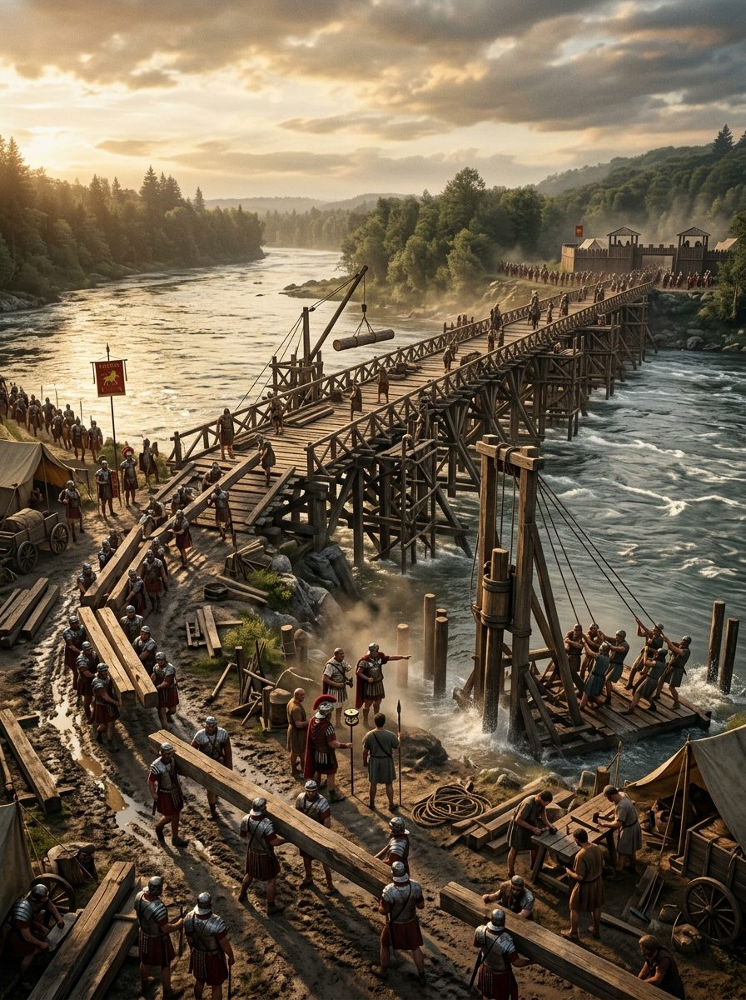

Coliseo Romano: Historia, Construcción y Gladiadores
El Coliseo —su nombre oficial es Anfiteatro Flavio— es el edificio más reconocible de Roma y uno de los monumentos más famosos del mundo. Construido entre el 72 y el 80 d.C. durante el reinado de los emperadores Vespasiano y Tito, con una capacidad de entre cincuenta mil y ochenta mil espectadores, representó el pico de la ingeniería arquitectónica romana y el escenario principal de los spectacula —los juegos públicos— que eran el instrumento más poderoso del que disponía el poder imperial para mantener la lealtad y el entretenimiento de la población de Roma.
La Ingeniería del Coliseo
El Coliseo es un elipsoide de 188 metros de largo por 156 de ancho y 48 de altura, construido sobre una estructura de hormigón romano —el opus caementicium— que ha demostrado ser más durable que muchas estructuras modernas. Sus cuatro pisos combinan los tres órdenes arquitectónicos griegos —dórico, jónico y corintio— con el arco romano en una fachada que fue el modelo para innumerables estadios modernos.
El interior del Coliseo era una maravilla de organización: un sistema de ochenta entradas —cada una numerada, como los estadios modernos— permitía a cincuenta mil espectadores tomar sus asientos en quince minutos y evacuarlos en el mismo tiempo. Las gradas se organizaban por rango social: los mejores asientos, más cercanos a la arena, estaban reservados para los senadores y el propio emperador; los peores, más alejados, para las mujeres y los esclavos. El suelo de la arena era de madera cubierta de arena —la palabra "arena" viene del latín para arena, que se usaba para absorber la sangre— sobre un sistema de túneles subterráneos, el hipogeo, donde se almacenaban los animales, el equipo y los gladiadores.

Los Gladiadores: Más Allá del Mito
La imagen popular del gladiador —un esclavo desgraciado obligado a combatir hasta la muerte ante multitudes sedientas de sangre— es en parte correcta y en parte una simplificación que ignora las complejidades de la realidad histórica. Los gladiadores eran en su mayoría esclavos, prisioneros de guerra o criminales condenados, sí. Pero había también hombres libres —e incluso algunos de rango senatorial, en las épocas más desordenadas— que elegían voluntariamente el oficio por razones que iban desde la desesperación económica hasta la búsqueda de fama y emoción.
Los gladiadores entrenaban en los ludi —escuelas de gladiadores— bajo la supervisión de lanistas, entrenadores especializados. El entrenamiento duraba meses antes de que un gladiador pudiera presentarse en la arena, y los lanistas tenían un incentivo económico para no dejar que sus inversiones murieran innecesariamente: un gladiador bien entrenado era una inversión costosa. Los datos arqueológicos y epigráficos —las lápidas de gladiadores que han sobrevivido— sugieren que la tasa de mortalidad en los combates era significativamente menor de lo que la leyenda popular sugiere: quizás uno de cada diez combates terminaba con la muerte de uno de los participantes.
Los combates seguían reglas complejas, con varios tipos de gladiadores especializados —el retiarius con red y tridente, el secutor con casco cerrado, el murmillo con escudo galés, el thrax con escudo pequeño y cuchillo curvo— que combatían con sus propios estilos y contra oponentes designados según una tradición establecida. El público entendía estas reglas y las apreciaba: los aficionados romanos distinguían entre un combate bien realizado y uno torpe con la misma precisión con que un aficionado moderno aprecia la técnica boxística.
Los Juegos como Instrumento Político
Los juegos gladiatorios —como todos los espectáculos públicos romanos— eran fundamentalmente un instrumento político. La fórmula que el poeta Juvenal acuñó —panem et circenses, pan y circo— captura la relación entre el poder imperial y la población de Roma: el emperador mantenía la lealtad de las clases urbanas proporcionándoles grano gratuito (o a precio controlado) y entretenimiento espectacular. Los juegos no eran solo diversión: eran la manifestación visible del poder y la generosidad imperial, y la ocasión en que el pueblo romano podía interactuar directamente con su gobernante.
El pulgar arriba o abajo de la leyenda popular es en realidad una simplificación del gesto real: la decisión de matar o perdonar a un gladiador vencido era tomada por el organizador de los juegos —normalmente el emperador o el magistrado que los patrocinaba— teniendo en cuenta la opinión del público, que la expresaba mediante gestos y aclamaciones. Un gladiador que hubiera combatido valientemente podía ser perdonado aunque hubiera perdido; uno que hubiera luchado cobardemente podía ser ejecutado aunque hubiera ganado. Los valores marciales que Roma promovía en los juegos eran los mismos que promovía en sus legiones: valor, disciplina y la aceptación estoica de la muerte.
"Los romanos no iban al Coliseo a ver morir gente. Iban a ver a personas enfrentarse al miedo con coraje. Esa es la diferencia entre la brutalidad y la espectacularización de la virtud."
— Keith Hopkins, Death and Renewal, 1983
Fuentes y Referencias Científicas
- Keith Hopkins y Mary Beard — The Colosseum, Profile Books, 2005
- Juvenal — Sátiras, X, s. I-II d.C.
- Plinio el Joven — Cartas, s. I-II d.C.
- Donald Kyle — Spectacles of Death in Ancient Rome, Routledge, 1998
Continúa leyendo
El Año de los Cuatro Emperadores →